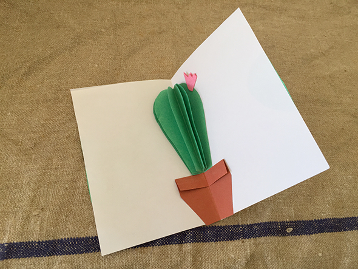
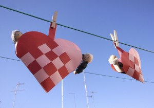

Material
Valentines day
Valentines Day card! What is more romantic than a cactus? Hahaha With colored paper is simple and very colorful. We are already thinking of other forms…
Read more →
Category

Valentines Day card! What is more romantic than a cactus? Hahaha With colored paper is simple and very colorful. We are already thinking of other forms…
Read more →
My Little Mr. Valentin. The heart necklace is made with a piece of heart-shaped wire with eatable pearls.
Read more →
An American cheesecake for Valentine's Day. Before stroking the jam on the cooled cake you put some cookie shapes on the cake and take them away…
Read more →
Valentine message for lovers. Cut along the line to make message visible. Cut a heart out of a light cake. Then make it stand in a…
Read more →


We had to eat many hazelnuts to get a few, which just broken into 2 halves. With walnuts, it is much easier. If the decoration and…
Read more →

A magical craft! In a jar with water you drop the wax of candles. When you have a complete layer try to get the form out.…
Read more →
We give away some sweet flowers with heart for our closest friends!
Read more →
For Valentine's Day: Hannah and Noah have sewn hearts ( template ). Because the paper doilies are out of such thin paper, we have glued cardboard…
Read more →


Valentine's Day The first time I made meringue ... a very simple thing. I was surprised that the colored part stayed up without going down in…
Read more →


Pocketbook of hearts. If you open it you see four hearts making one cloverleaf.
Read more →
Hearts garland to Valentin. To get the curves you have to turn the paper around a pen. Seen at howaboutorange
Read more →
The paper weaved heart are from Scandinavia where they are Christmas tree decoration.
Read more →